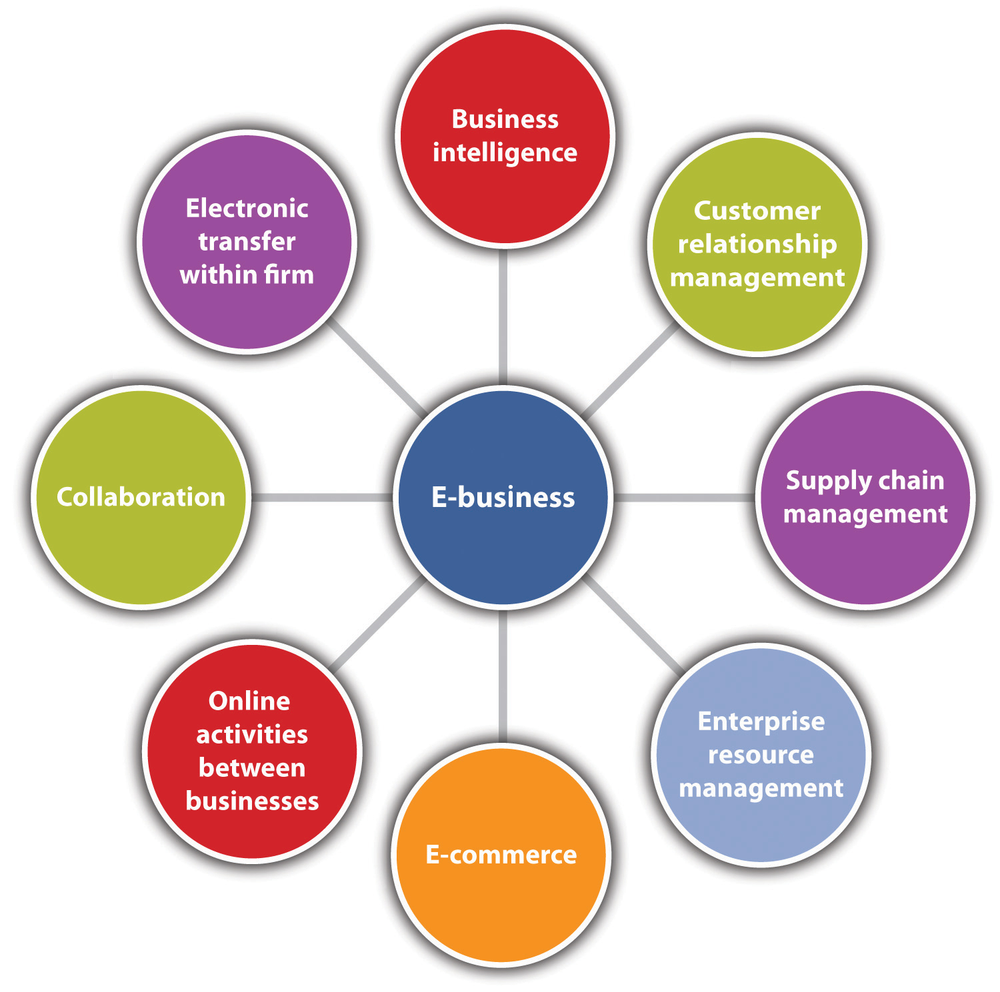
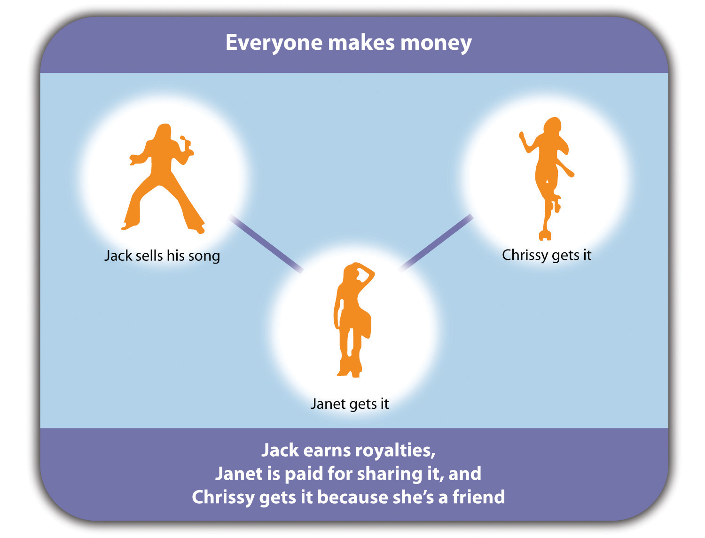

As stated in Chapter 1 "Foundations for Small Business", e-business and e-commerce are terms that are often used interchangeably. But e-business and e-commerce are not the same. This section will elaborate on the differences between the two and some of the foundational knowledge that is critical to understanding and using e-commerce in particular.
Chapter 1 "Foundations for Small Business" talked about e-business in terms of using the Internet and online technologies to create operational efficiencies, thereby increasing customer value.Kelly Wright, “E-Commerce vs. E-Business,” Poole College of Management, November 27, 2002, accessed October 10, 2011, scm.ncsu.edu/scm-articles/article/e-commerce-vs.-e-business. It is important that small businesses understand the nature of e-business and how it can facilitate operations as well as growth—if growth is desired. It has been said on other occasions, and it will continue to be said, that not all small businesses look for growth, choosing instead to happily remain small. For the small businesses that do want to grow, however, e-business can help them do it.
E-business involves several major components:Terri C. Albert and William B. Sanders, e-Business Marketing (Upper Saddle River, NJ: Prentice-Hall, 2003), 2–4; and Efraim Turban et al., Electronic Commerce: A Managerial Perspective (Upper Saddle River, NJ: Pearson/Prentice Hall, 2008), 4. business intelligence (BI), customer relationship management (CRM), supply chain management (SCM), enterprise resource planning (ERP), e-commerce, conducting electronic transactions within the firm, collaboration, and online activities among businesses.
Figure 4.1 Components of E-Business
Business intelligenceThe activities that a small business may undertake to collect, store, access, and analyze information about its market or competition to help with decision making. is about the activities that a small business may undertake to collect, store, access, and analyze information about its market or competition to help with decision making. When conducted online, BI is efficient and quick, helping companies to identify noteworthy trends and make better decisions faster. BI has been described as “the crystal ball of the 21st century.”Lena L. West, “Business Intelligence: The Crystal Ball of Champions,” Small Business Computing.com, April 11, 2006, accessed October 10, 2011, www.smallbusinesscomputing.com/biztools/article.php/3598131/Business -Intelligence-The-Crystal-Ball-of-Champions.htm.
As defined in Chapter 2 "Your Business Idea: The Quest for Value", customer relationship management (CRM)A service approach that hopes to build a long-term and sustainable relationship with customers that has value for both the customer and the company. refers to “…a customer service approach that focuses on building long-term and sustainable customer relationships that add value for the customer and the company.”Efraim Turban et al., Electronic Commerce: A Managerial Perspective (Upper Saddle River, NJ: Pearson/Prentice Hall, 2008), 759. It is a company-wide strategy that brings together information from all data sources within an organization (and sometimes from external data sources) to give one holistic view of each customer in real time. The goal is to reduce costs and increase profitability while providing customer satisfaction.“What Is CRM?,” cestinationCRM.com, February 19, 2010, accessed October 10, 2011, www.destinationcrm.com/Articles/CRM-News/Daily-News/What-Is-CRM-46033.aspx. CRM applications are available for even the smallest businesses.
Every small business has a supply chain, the network of vendors that provide the raw components that are needed to make a product or deliver a service. The management of this network is known as supply chain management (SCM)Efficiently and effectively improving the way that a company finds raw components and then delivers the product or the service to the customer.. SCM is about efficiently and effectively improving the way that a company finds those raw components and then delivers the product or the service to the customer.Thomas Wailgum and Ben Worthen, “Supply Chain Management Definition and Solutions,” CIO, November 20, 2008, accessed October 10, 2011, www.cio.com/article/40940/Supply_Chain_Management_Definition_and_Solutions. SCM applications are now available for small businesses. More details about SCM are presented in Chapter 12 "People and Organization".
Enterprise resource planning (ERP), as mentioned in Chapter 1 "Foundations for Small Business", is about integrating all departments and functions across a company (sales, marketing, human resources, finance, accounting, production, engineering, etc.) into a single computer system that can serve the particular needs of each department. The objective is to provide information quickly and efficiently to those who need it. Small businesses have many vendor choices for ERP systems. There are more than thirty vendors in the field, and they are looking to small and midsize businesses as their primary growth market.Mary O. Foley, “ERP for Small Business: The Time is Ripe,” Inc., October 1, 2007, accessed October 10, 2011, technology.inc.com/2007/10/01/erp-for-small-business -the-time-is-ripe. More details about ERP are provided in Chapter 12 "People and Organization".
E-commerce, as defined in Chapter 1 "Foundations for Small Business", is the marketing, selling, and buying of goods and services online. It generates revenue, which e-business does not. E-commerce is typically associated with e-marketing, discussed in Chapter 8 "The Marketing Plan", but most of this chapter is dedicated to the operational, nonmarketing dimensions of e-commerce.
Conducting electronic transactions within a firm can occur through an intranetA private network within a business that is used for information sharing, processing, and communication., e-mail, and instant messaging. An intranet is a private network within a business that is used for information sharing, processing, and communication. The goal is to “streamline the workplace and allow easy information exchange within an organization.”Dachary Carey, “What Is Intranet Technology Used For?,” Life123, accessed October 10, 2011, www.life123.com/technology/internet/intranet/what-is-intranet.shtml.
Collaboration can occur internally or externally, and it often involves business partners. The goal is to help teams or business partners communicate with each other more effectively and efficiently, manage projects and shared materials, save companies the costs of travel, and reduce travel-related productivity losses.Gerry Blackwell, “Altogether Now: Comparing Collaboration Software,” Small Business Computing.com, January 28, 2008, accessed October 10, 2011, www.smallbusinesscomputing.com/buyersguide/article.php/10729_3724501_/Altogether-Now-Comparing-Collaboration-Software.htm. E-mail, instant messaging, newsgroups, bulletin boards, discussion boards, virtual team rooms, online meetings, and wikisA web page that can be viewed and modified by anybody with a web browser and access to the Internet unless it is password protected. are common means of collaboration. A wiki is a web page that can be viewed and modified by anybody with a web browser and access to the Internet unless it is password protected.“7 Things You Should Know about Wikis,” Educause Learning Initiative, July 2005, accessed October 10, 2011, net.educause.edu/ir/library/pdf/ELI7004.pdf. The most well-known wiki is Wikipedia.
Online activities between businesses focus on information sharing and communication via e-mail, online meetings, instant messaging, and extranetsThe part of an intranet that is made available to business partners, vendors, or others outside a company.. An extranet is the part of an intranet that is made available to business partners, vendors, or others outside a company. It allows a business “to share documents, calendars, and project information with distributed employees, partners, and customers” and “it enables 24/7 private, secure access to collaborative tools with just an Internet connection.”“Communicate Quickly and Efficiently Through Intranets, Extranets and Portals,” Gozapit Interactive, 2009, accessed October 10, 2011, www.gozapit.com/intranet-extranet.htm. They make communication easier, eliminate redundant processes, reduce paperwork, increase productivity, provide immediate updates and information, and provide quick response times to problems and questions.“Communicate Quickly and Efficiently Through Intranets, Extranets and Portals,” Gozapit Interactive, 2009, accessed October 10, 2011, www.gozapit.com/intranet-extranet.htm. The result is money and time saved for employees, the company, vendors, and your customers. Commercial transactions typically do not take place on extranets.
As integral as e-business may be to many small businesses, however, there will be small businesses that choose not to go the e-business route. Small businesses that are nonemployers and/or are very small operations that choose to stay that way—for example, local delis, gift shops, restaurants, dry cleaners, and ice cream shops can be and are successful without having to make a commitment to e-business. Therefore, a small business can choose to incorporate all, some, or none of the e-business components. Given the ways in which the Internet continues to transform small businesses, however, it would be virtually impossible for a small business to operate totally outside the realm of e-business.
The moment that an exchange of value occurs, e-business becomes e-commerce.Elias M Awad, Electronic Commerce: From Vision to Fulfillment (Upper Saddle River, NJ: Pearson Education, 2005), 4. E-commerce is the revenue generator for businesses that choose to use the Internet to sell their goods and services. Some small businesses rely on the Internet to grow and survive. As stated in Chapter 1 "Foundations for Small Business", many small businesses also look to e-commerce for their own business needs, such as computers and office technology, capital equipment and supplies, office furnishings, inventory for online sale, or other business-related goods.“E-commerce: Small Businesses Become Virtual Giants on the Internet,” accessed October 10, 2011, www.score.org/system/files/become_a_virtual_giant.pdf. This is not surprising considering the pervasiveness of the Internet for business transactions of all shapes and sizes.
Every Internet business is either pure-playA business that has an online presence only. or brick-and-clickBusinesses that combine a physical presence with an online presence.. A pure-play business, such as Amazon and Zappos, has an online presence only and uses the capabilities of the Internet to create a new business. Brick-and-click businesses, such as Barnes and Noble and Vermont Country Store, combine a physical presence with an online presence. These businesses use the Internet to supplement their existing businesses.Sandeep Krishnamurthy, E-Commerce Management: Text and Cases (Mason, OH: South-Western, 2003), 73.
There are several different types of e-commerce. A common classification system is with respect to the nature of transactions or the relationships among participants.Efraim Turban et al., Electronic Commerce: A Managerial Perspective (Upper Saddle River, NJ: Pearson/Prentice Hall, 2008), 8. There are seven major types of e-commerce:
Figure 4.2 How P2P E-Commerce Works at Tamago.com
Source: “Peer to Peer Profit,” http://www.tamago.us (accessed October 10, 2011).
Although these types of e-commerce have been discussed individually, there are many instances in which one company engages in multiple types. Office Depot and Staples are brick-and-click businesses that engage in B2B, B2C, and perhaps B2G e-commerce. Carbonite and Gourmet Gift Baskets are both pure-play small businesses that engage in B2C and B2B e-commerce.
The decision to engage in e-commerce is an important one. The advantages are clear: lower business costs; 24/7 accessibility anywhere; the potential for stronger customer service; the ability to introduce a niche product; the ability to reach global markets on a more equalized basis with larger firms, making mass customization possible; and greater customer loyalty. But the risks are there as well. Internet problems, website problems, security and privacy breaches, intellectual property theft, legal liability, product and/or service failure, customer deceit, and customer dissatisfaction are but a few of the risks. Therefore, the choice of an e-commerce business model must be made carefully. Each model will have different implications in terms of business planning and strategy.
An e-commerce business modelThe method that a business uses to generate revenue online. is the method that a business uses to generate revenue online. “The business model spells out how a company makes money by specifying where it is positioned in the value chain. Some models are quite simple. A company produces a good or service and sells it to customers. If all goes well, the revenues from sales exceed the cost of operation and the company realizes a profit. Other models can be more intricately woven.”Michael Rappa, “Business Models on the Web,” DigitalEnterprise.org, January 17, 2010, accessed October 10, 2011, digitalenterprise.org/models/models.html. Another way to look at a business model is that it “reflects management’s hypothesis about what customers want, how they want it, and how the enterprise can organize to best meet those needs, get paid for doing so, and make a profit.”David J. Teece, “Business Models, Business Strategy and Innovation,” Long Range Planning 43, no. 2–3 (2010): 172–94. There are many models to choose from, and new models will continue to emerge as technology evolves and businesses look for new and creative ways to generate revenue. Some of the many e-commerce business models are as follows:For additional discussions of business models, see Michael Rappa, “Business Models on the Web,” DigitalEnterprise.org, January 17, 2010, accessed October 10, 2011, digitalenterprise.org/models/models.html; and Robert D. Atkinson et al., “The Internet Economy 25 Years After .Com: Transforming Commerce & Life,” Information Technology & Innovation Foundation, March 2010, accessed October 10, 2011, www.itif.org/files/2010-25-years.pdf.
Because the business model will be at the center of the business plan, the model must be designed carefully. If a successful model is to be built, the model should effectively address the eight key elements listed in Table 4.1 "Key Elements of a Business Model". Although value proposition and the revenue model may be the most important and easily identifiable aspects of a company’s business model, the other six elements are equally important.Kenneth C. Laudon and Carol G. Traver, E-Commerce: Business, Technology, Society (Upper Saddle River, NJ: Prentice Hall, 2007), 58; Efraim Turban et al., Electronic Commerce: A Managerial Perspective (Upper Saddle River, NJ: Pearson/Prentice Hall, 2008), 8.
Table 4.1 Key Elements of a Business Model
| Components | Key Questions |
|---|---|
| Value proposition | Why should the customer buy from you? |
| Revenue model | How will you earn your money? |
| Market opportunity | What market space do you intend to serve, and what is its size? |
| Competitive environment | Who else occupies your intended market space? |
| Competitive advantage | What special advantages does your firm bring to the market space? |
| Market strategy | How do you plan to promote your products or services to attract your target audience? |
| Organizational development | What types of organizational structures within the firm are necessary to carry out the business plan? |
| Management team | What kinds of experiences and background are important for the company’s leaders to have? |
Source: Kenneth C. Laudon and Carol G. Traver, E-commerce: Business, Technology, Society (Upper Saddle River, NJ: Prentice Hall, 2007), 59.
For businesses already engaged in e-commerce and for those that are thinking about it, being aware of the latest e-commerce trends is important because they could have a long-term influence on the future of a company’s market. This influence, in turn, could mean life or death for your e-commerce operations. Several general e-commerce trends can be identified, and they are relevant to all e-commerce operations.
The following e-commerce trends specifically apply to small businesses:
Naked Pizza on Twitter
(click to see video)Naked Pizza can now be followed on Twitter.
Despite the popularity and pervasiveness of e-commerce, not all small businesses may be interested in pursuing e-commerce as a part of their businesses. Many small businesses survive without an online presence. However, business analysts have agreed for a long time “that for any company larger than a local mom and pop store, e-commerce is now a business requirement.”Beverly Kracher and Cynthia L. Corritore, “Is There a Special E-Commerce Ethics?,” Business Ethics Quarterly 14, no. 1 (2004): 71–94.
Joan Watson is the owner of Joan’s Gourmet Baskets, a small brick-and-mortar business that specializes in gourmet gift and picnic baskets. Joan has been keeping up with the fancy food and gourmet food trends (being a great fan of the Fancy Food Show that is held several times a year), and she thinks she should tap into this sector by creating an online business that will complement her physical business. This would make her baskets available to a wider market. She is proud of the quality of her products and the customer loyalty that she has earned through her hard work and hopes she will be able to be just as successful in the e-commerce environment.
Joan knows that she needs more information before proceeding further. She has asked you to prepare a report that answers the following questions: How will her physical business compare to her online business; that is, where will things be the same, and where will they be different? What business model should she use? What are the special challenges and obstacles she will face as she moves from traditional commerce to e-commerce? What is Web 2.0 all about and does she need to be concerned about it? She expects that you will do additional gourmet foods research to support your ideas.